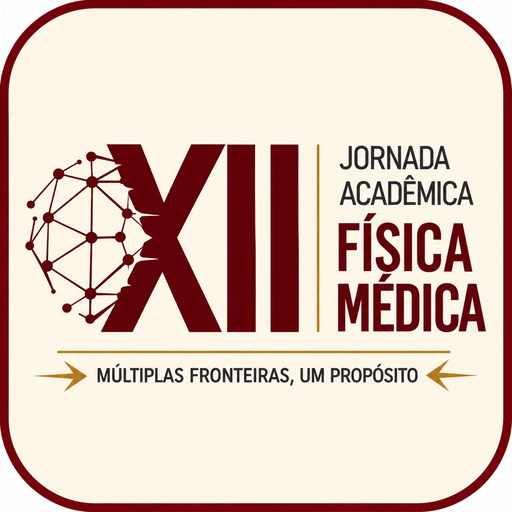

Bem-vindos à XII Jornada Acadêmica de Física Médica
Múltiplas fronteiras. Um propósito.
Um espaço de encontro entre estudantes, profissionais, pesquisadores e instituições para compartilhar experiências e perspectivas sobre formação, pesquisa, inovação e atuação em Física Médica.

Mensagem da Comissão Organizadora
Espaço reservado para o texto oficial de boas-vindas.